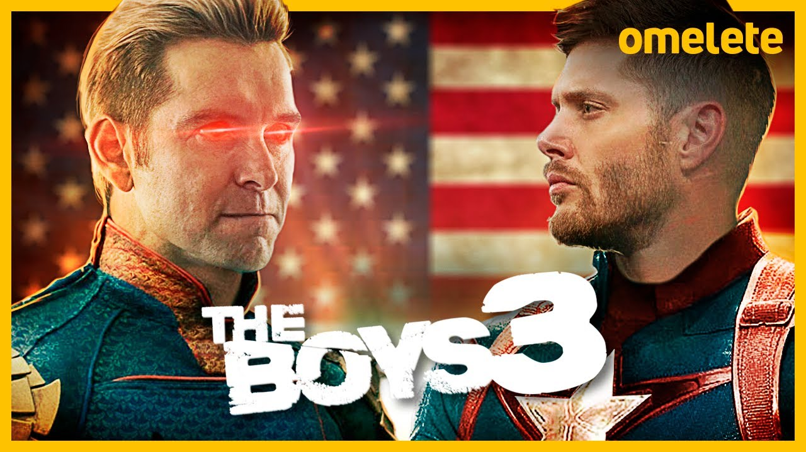

3º Temporada

A terceira temporada de The Boys ainda não ganhou data de estreia, porém os fãs estão ansiosos por qualquer novidade da adorada série estrelada por Karl Urban. A chegada de Jensen Ackles no elenco promete ser um dos grandes destaques dos próximos episódios, porém não será a única coisa que acontecerá envolvendo os heróis do Seven. O Amazon Prime Video encontrou uma forma criativa de divulgar alguns spoilers sobre o que vem por aí.
Após os acontecimentos chocantes da mais recente season finale, a terceira temporada de The Boys trará Hughie (Jack Quaid) trabalhando numa função importante no escritório da famosa congressista Victoria Neuman (Claudia Doumit) — que esconde um segredo sombrio, sendo responsável pelas explosões dos episódios anteriores. Já a dinâmica dos Sete muda desde que Maeve (Dominique McElligott) passa a chantagear Homelander (Antony Starr), ameaçando expor seu verdadeiro caráter na mídia.
Além disso, a grande novidade do elenco fica por conta de Jensen Ackles. O astro de Supernatural irá interpretar Soldier Boy, o primeiro herói a se tornar uma celebridade, após sua grande ajuda na Segunda Guerra Mundial. Já viu a imagem inédita do personagem? Bem, foi revelado que o moço terá sua própria trupe de supers, cujo envolvimento com a progressão da história da Vought será muito importante para a trama. Isso sem contar a orgia de heróis confirmada, mas isso é outra história...
Enquanto a nova temporada não chega, o Amazon Prime Video encontrou uma forma curiosa de manter os fãs entretidos, ao mesmo tempo que prepara o terreno para os novos episódios. Mensalmente, são revelados capítulos de um jornal das empresas Vought, onde vamos descobrindo novidades sobre a história criada por Eric Kripke.
Graças a ele, já descobrimos que um outro personagem importante vai surgir: Supersonic - o novo alter ego de um homem anteriormente conhecido como Drummer Boy (interpretado por Miles Gaston Villanueva). A mudança surge após ele passar um bom tempo a reabilitação, mas está pronto para ser vendido como um novo herói perfeito. Segundo o âncora do jornal, Cameron Coleman (Matthew Edison), ainda existem rumores sobre um possível relacionamento do moço com Starlight (Erin Moriarty). Nos quadrinhos, a dupla liderava um grupo cristão na juventude, até que a jovem Anne foi traída pelo amado, que estava se envolvendo com outra garota. Abre o olho, Hughie!
Finalmente, o jornal também revela vislumbres de arcos de alguns heróis na nova temporada. Por exemplo, Deep (Chace Crawford) está se mobilizando contra a Igreja do Coletivo, fazendo um exposé sobre as intenções do grupo. Ele os acusa de "manipulação psicológica, corrupção corporativa e uma bizarra associação com Fresca".
Vale lembrar que Alastair Adana (Goran Višnjić) decidiu ajudar apenas A-Train (Jessie T. Usher) a voltar para os Seven, deixando Deep indignado. Também é importante ressaltar que o líder da igreja foi morto por Victoria. Por sua vez, o retorno de A-Train para os Seven foi confirmado pela assessoria de imprensa da Vought. No caso, o jornal descreve como ele desistiu de se aposentar e está pronto para uma corrida importante junto a um concorrente misterioso.